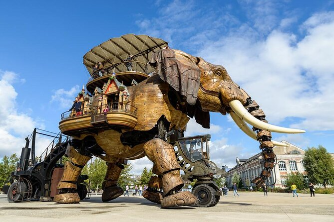
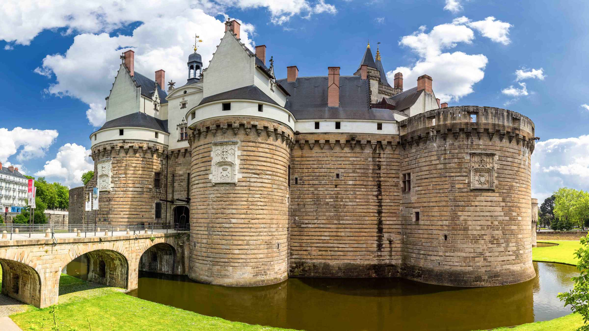
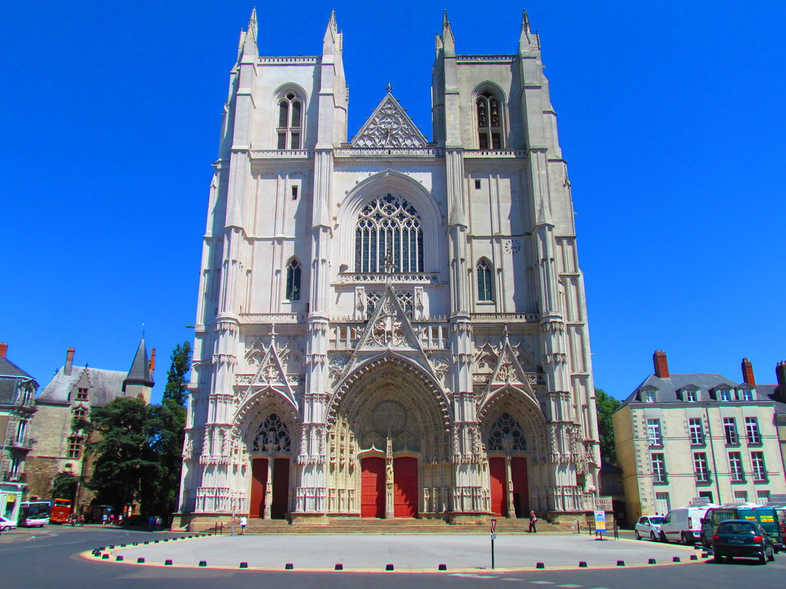

There are many interesting places in Nantes to explore such as:
Les Machines of the Isle of Nantes
A combination of art and engineering makes up a large-scale mechanical elephant a long with a museum. It can be a great place to learn about the art, engineering and history of Nantes.

Château des Ducs de Bretagne
This castle is a must see if you’re interested in the history of Nantes this picturesque castle is pact with lots of history and architecture. In the castle there is the Musée d'Histoire de Nantes (Nantes history museum) which is pact with interesting history about Nantes and France.

Cathédrale Saint-Pierre et Saint-Paul de Nantes
This stunning cathedral is an impressive example of Gothic architecture. It took several centuries to complete and offers visitors a beautiful and inspiring space to explore.

Musée d'arts de Nantes (Nantes Museum of Art)
This museum features an enormous collection of interesting art, including works from the Renaissance to contemporary art.